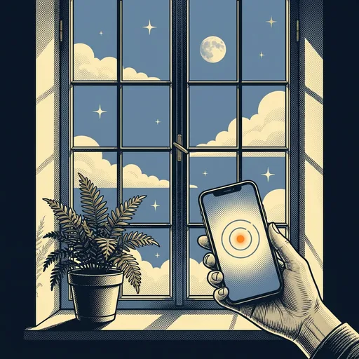
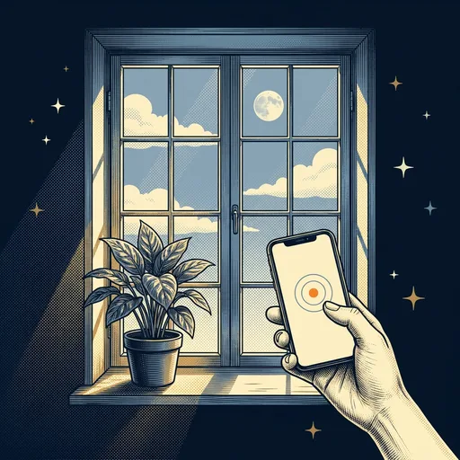
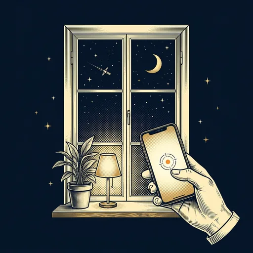
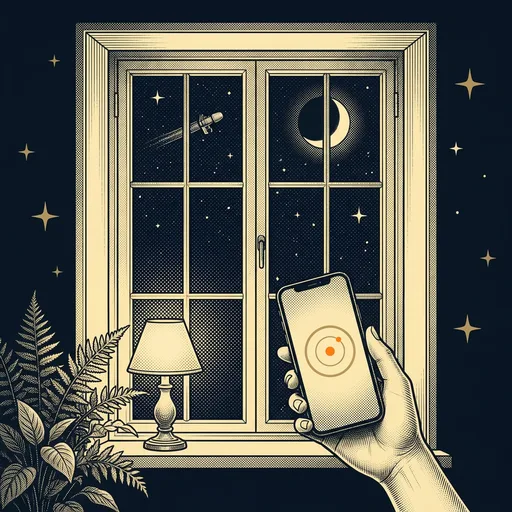
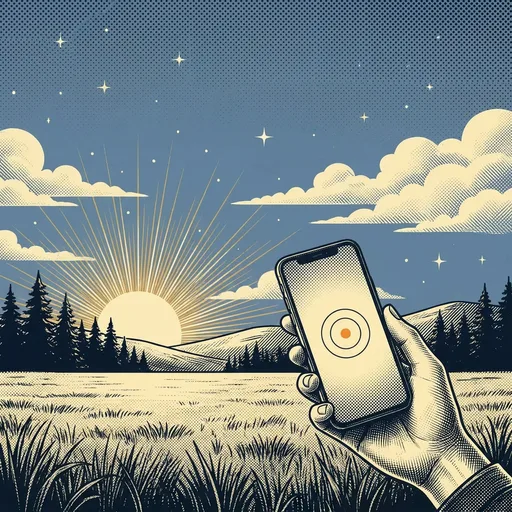
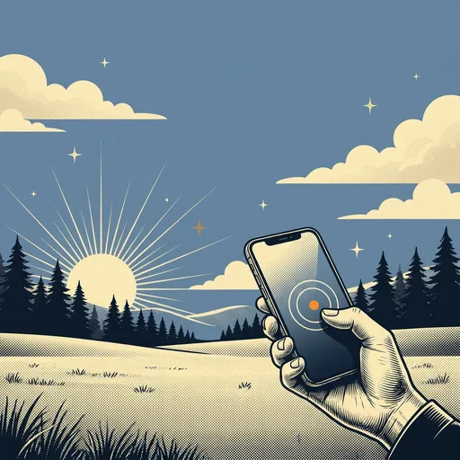
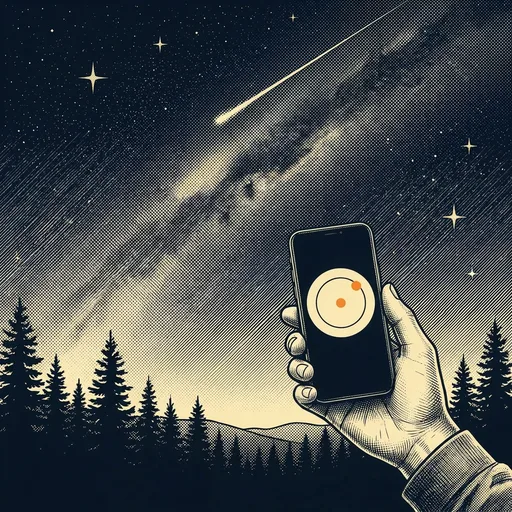
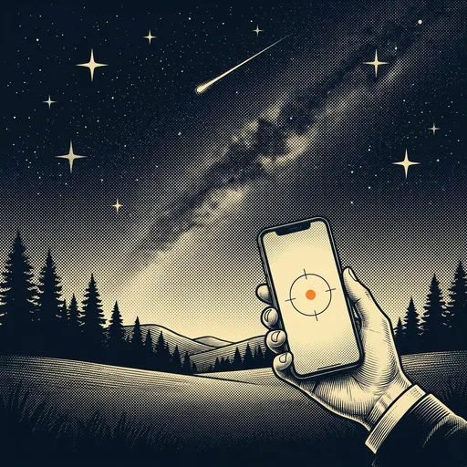

Step 2 of the tour, drawn four ways. Each option shows the card resting and with Outside tapped. Pictures change with the time of day (Sun by day, Moon and stars at night); option A is also shown at night. The title, time and "Dark at" lines stay as they are.
Each choice is a small card in the game's own style: silver frame, header, a painted window, name, type line and a stat row like a real card's. The one you tap lifts and glows orange; the other steps back. Most like the rest of the game.
The scene fills the card edge to edge, gold edge, a chip on top ("Anywhere" / "The real thing") and the name over a dark fade at the bottom. The biggest pictures, the fewest words.
Two full-width cards stacked like tickets: picture on the stub, then what it means for tonight in a sentence. Room to say what happens next; easy to tap one-handed.
Design C with new pictures in the cards' own print style (navy and cream inks, hatching, halftone dots): no stick figures, just a hand holding the phone up. Two tries of each, day and night. Pick a try for each picture.
The pictures, full size








The two cards are dealt as a hand, fanned and gently breathing. Tap one and it rises out of the hand and straightens; then the tour moves on. The most playful; like picking a card.